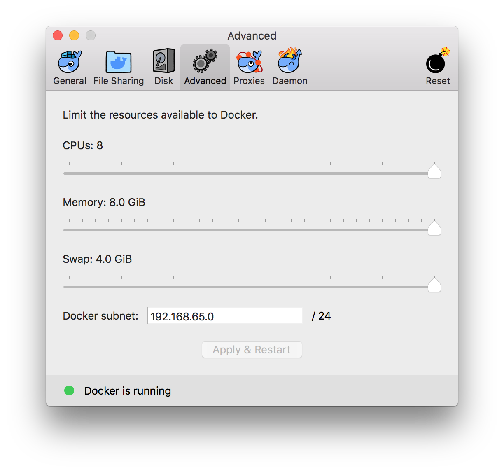
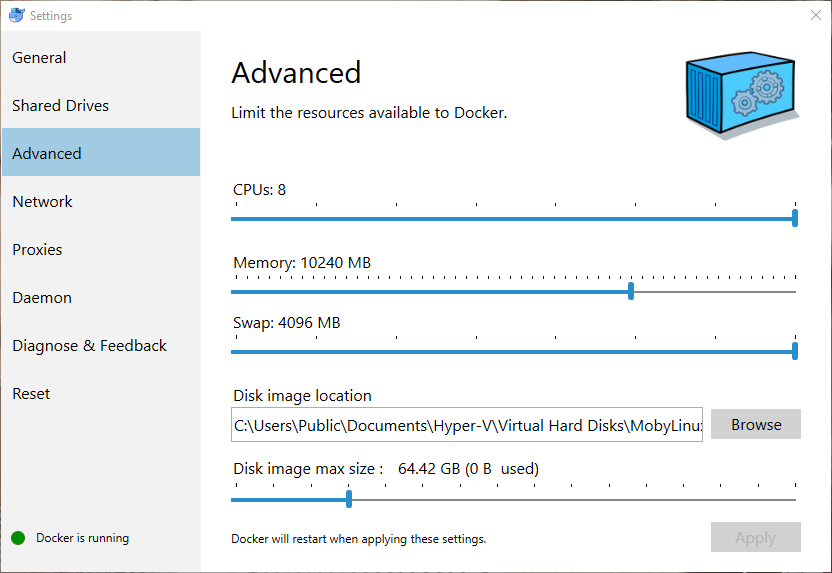
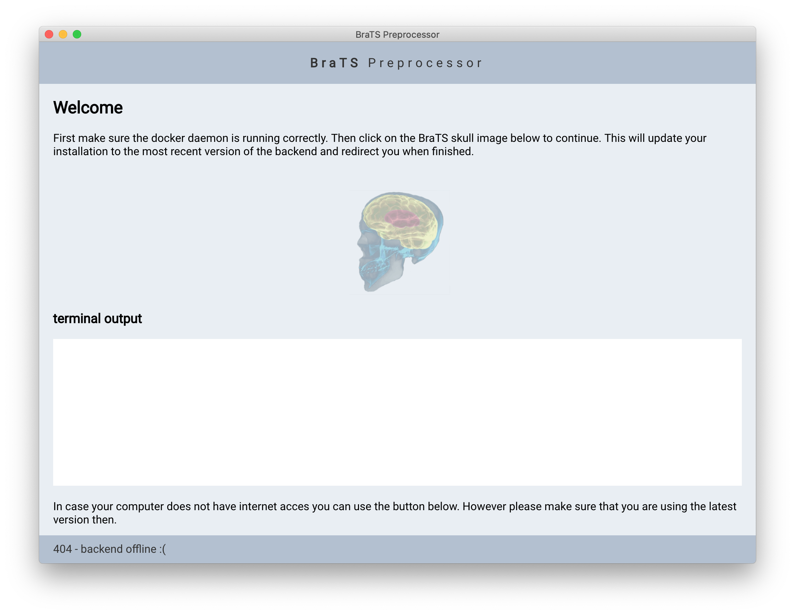
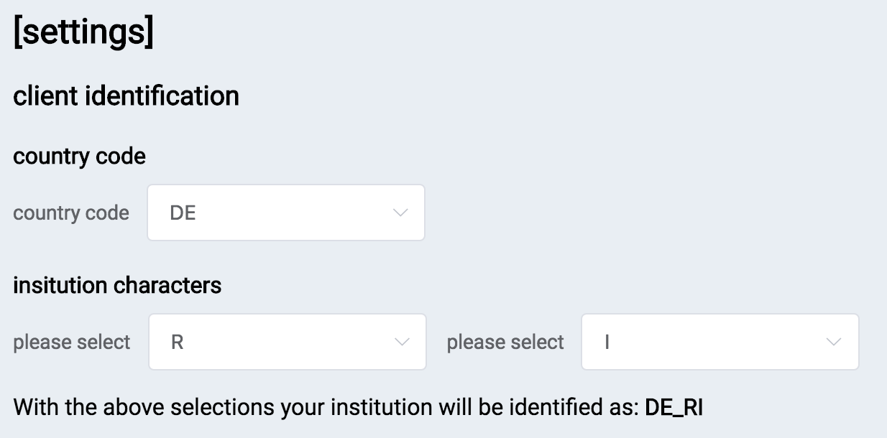

Welcome this guide is meant to help you processing your first dataset. As Docker is the backbone of our application it is necessary to first install and configure Docker. If you have Docker already installed please directly proceed to the Docker Configuration section.
The docker documentation provides up to date and comprehensive instructions on installing docker, the following remarks are meant in addition to it to help you troubleshooting the installation. The free community edition (CE) version of docker is sufficient for our purposes.
On Ubuntu 1604 and 1804 the installation via the convenience script proved to be fast and efficient. We expect this to also work on other Linux distributions.
Download and install Docker Desktop for Mac via the installer.
Download and install the latest version of Docker Desktop for Windows.
If you do not meet the minimum requirements for Docker Desktop, docker can be installed inside a virtual machine via Docker Toolbox. Support for docker toolbox is still work in progress so we strongly recommend opting for Docker Desktop.
Hyper-V related problems might be solved by following the solutions provided in this stackoverflow.
After installing and running the Docker daemon we recommend you to create a free Docker Store account here. Use the created account to login with your Docker Daemon. To login use your account name and not your email adress.
If you are not running Linux you also need to adjust the system ressources available to docker. When doing this you should allocate atleast 6GB RAM. Increasing the amount of RAM and CPU cores available to docker will speed up the computations as the code is parallelized.
Despite of the login no specific actions are required.
You can find the corresponding settings here: 
You can find the corresponding settings here: 
Download the client for your operating system from one of the corresponding links below:
After the download extract the archive's contents to a folder of your choice. Then..
Linux users should execute the program as sudo. Open a terminal, navigate to the extracted folder and type:
sudo ./ brats_preprocessor
In finder navigate to the extracted folder and doubleclick on brats_preprocessor.app to open the application.
In Windows explorer navigate to the extracted folder and doubleclick on brats_preprocessor.exe to open the application.
When the program has finished loading, you will see the following screen:
Make sure you have a working internet connection and click on the elephant logo. This will download the most recent version of the backend from docker hub. Depending on your internet connection this process might take a while as several gigabytes have to be downloaded. When the process is finished you will be redirected to the next screen..
Now it is time to verify whether the program works correctly. Before running it with your own data we recommend trying the test dataset once. Therefore please download the testdata from here and extract it to the location where you want to process your data.
Now select one of the four modes depending on your preferences. Note that the cuda mode is only available on Linux, as currently NVIDIA docker is supported only under Linux.
Next you need to map the four folders (dicom import, nifti export, exam import, export) to the corresponding folders from the test archive. Click on the white boxes below the respective folders and navigate to the desired path. When you finished doing this for all four folders click on the docker run button at the top of the page. The startup of the docker container will take a couple of seconds and you will be redirected to the next screen. From there follow the instructions within the application to process the images.
Processing your own data works analogue to the test case. Use the same folder structure like in the test case and map the four folders. Then press the start backend! button to get going.
Concerning questions, feedback etc. please contact Florian Kofler